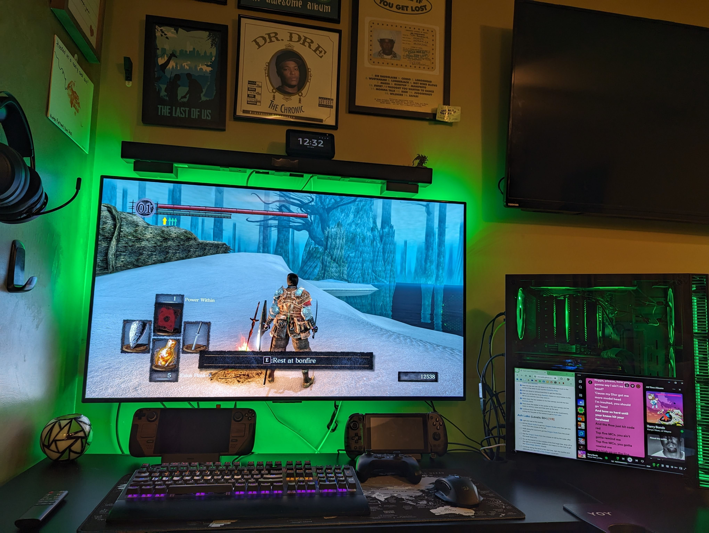
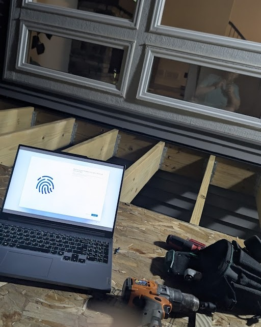
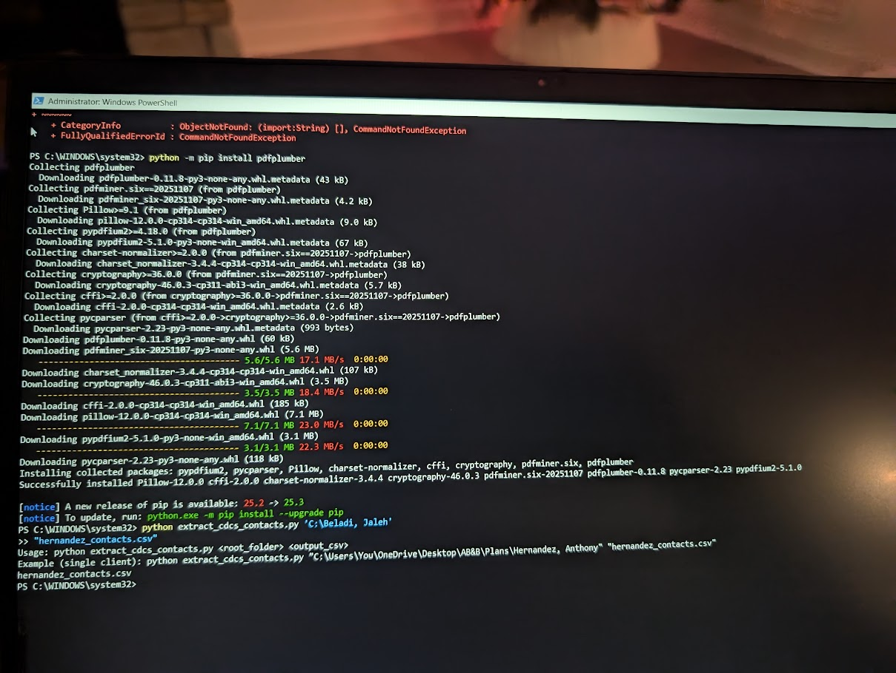

Why call me for PC work?
Some people look at a pile of PC parts, a sluggish laptop, or a repetitive business process and see frustration. I see a puzzle and a chance to build something better.
I’ve been deep into PC hardware for more than two decades. That includes custom desktops, gaming builds, troubleshooting Windows issues, upgrading laptops, and building simple systems that automate repetitive work for businesses. If you want honest advice, practical options, and someone who actually enjoys this stuff, you’re in the right place.
Most requested PC services
Custom PC Builds
From homework and streaming machines to gaming rigs and server boxes, I can build the right system for your budget and goals.
Laptop Refresh & Repair
Slow laptop? Aging Windows machine? I can clean it up, refresh it, and often make it useful again.
Upgrades & Optimization
RAM, storage, general performance improvements, and common-sense upgrades that make your system feel better to use.
Business Automation
Custom small-business solutions that eliminate repetitive manual tasks and keep your workflow moving.
Custom PCs for real-world needs
Not everyone needs the same computer, and that’s the whole point. I can build lean, affordable PCs for homework, web browsing, and streaming. I can also build midrange gaming systems that hit a sweet spot for budget and performance, or go all the way to a high-end machine built for gaming, content creation, AI workloads, or just unapologetically cool hardware.
If you need something more specialized, I can also help with small server-style builds for things like Plex, 3D printer management, remote access tools, or game servers.
Good fit for:
- Budget home or student PCs
- Gaming builds and upgrades
- Older laptops that feel painfully slow
- Home servers and media machines
- Businesses wasting time on repetitive tasks
Repairs, refreshes, and upgrades
One of the biggest myths in tech is that every older computer is trash. A lot of laptops and desktops made in the last 6–8 years are still perfectly useful — they just need some attention.
If your machine is slow, cluttered, unstable, or just feels miserable to use, I can often bring it back to life with a clean install, proper drivers, a little cleanup, and smart upgrades like more RAM or faster storage.
Windows help without the eye-roll
I’m very comfortable with Windows systems and all the little things that make them frustrating: driver issues, weird performance drops, startup problems, update headaches, and “it worked fine yesterday” mysteries.
My goal is simple: make your machine stable, usable, and worth owning again — without trying to sell you a whole new computer if you don’t actually need one.
Small business automation & integration
This is where my PC and IT side overlaps with real business problem solving. If your company is still doing repetitive manual work every day, there’s a good chance some of it can be automated.
Need to automatically generate and print shipping labels? Want inventory labels printed as soon as stock hits your system? Need to move a stubborn local process into the cloud? Want to stop manually switching an on-call phone number or repeating the same admin steps over and over?
I build simple, scalable solutions that reduce busywork and make the process more hands-off. I also stand behind what I build. If something breaks or a bug shows up, I’ll fix it — and I’m happy to document it and train someone on your team to maintain it too.
What working with me looks like
I’m not going to bury you in specs unless you want me to. I’ll ask what you actually need, what you want to spend, and what’s frustrating you right now. Then I’ll give you a practical recommendation.
Sometimes that means building something new. Sometimes it means fixing what you already have. Sometimes it means telling you not to waste money on the wrong upgrade. Either way, you’ll get an honest answer and a solution that fits the job.
PC Services gallery
{kind=link}

Custom build or upgrade
Use one of your cleanest PC build, desk setup, or upgrade photos here.
{kind=link}

Laptop refresh or repair
Great spot for a laptop teardown, upgrade, or revived machine shot.
{kind=link}

Automation or server project
Use a server, integration, label automation, or tech-workflow image here.
Need help with a PC or project?
If you need a new build, want to revive an older machine, or have a business process that feels more repetitive than it should, reach out. Texting is usually the fastest way to get the conversation started.